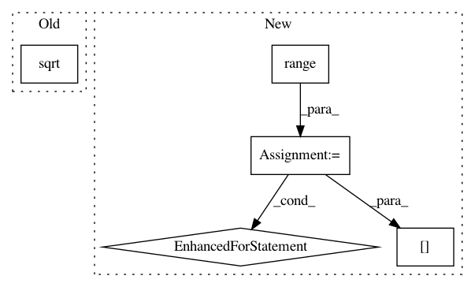

da42c137d164ab56a1f1919c8f0ee21e6172f120,cde/evaluation/GoodnessOfFit.py,GoodnessOfFit,hellinger_distance_monte_carlo,#GoodnessOfFit#Any#Any#,134
Before Change
f = stats.cauchy.pdf(samples, loc=0, scale=2)
p = np.sqrt(P(samples, y))
q = np.sqrt(Q(samples, y))
r = (p - q)**2
After Change
distances = np.zeros(x.shape[0])
for i in range(x.shape[0]): // iterate over x values to condition on
P = self.probabilistic_model.pdf
Q = self.estimator.predict
samples = stats.cauchy.rvs(loc=0, scale=2, size=(n_samples, self.estimator.ndim_x))
f = _multidim_cauchy_pdf(samples, loc=0, scale=2)
p = np.sqrt(P(x[i,:], samples))
q = np.sqrt(Q(x[i,:], samples))
r = (p - q)**2
distances[i] = np.sqrt(np.mean(r / f)/2)
assert distances.ndim == 1 and distances.shape[0] == x.shape[0]
return distances
In pattern: SUPERPATTERN
Frequency: 3
Non-data size: 5
Instances
Project Name: freelunchtheorem/Conditional_Density_Estimation
Commit Name: da42c137d164ab56a1f1919c8f0ee21e6172f120
Time: 2018-03-20
Author: jonas.rothfuss@gmx.de
File Name: cde/evaluation/GoodnessOfFit.py
Class Name: GoodnessOfFit
Method Name: hellinger_distance_monte_carlo
Project Name: chainer/chainerrl
Commit Name: 3dc5c5719c2a56818f3c0c48f7268422a1f089c8
Time: 2016-05-22
Author: muupan@gmail.com
File Name: tests/test_policy_output.py
Class Name: TestGaussianPolicyOutput
Method Name: test_sampled_actions_log_probs
Project Name: geomstats/geomstats
Commit Name: fc77bf19a2929bdb181f95f0ea272eb7283c4efc
Time: 2018-05-03
Author: ninamio78@gmail.com
File Name: geomstats/spd_matrices_space.py
Class Name: SPDMatricesSpace
Method Name: sqrtm